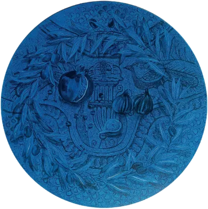
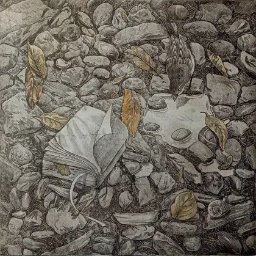
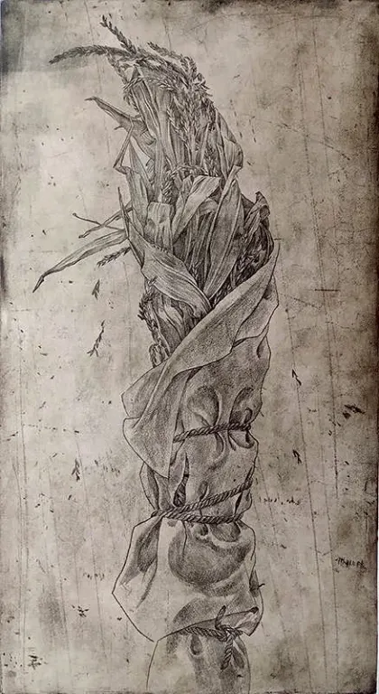
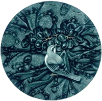
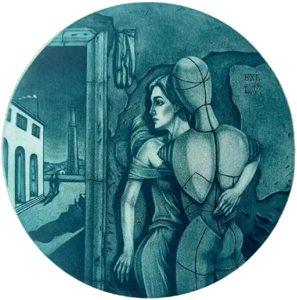
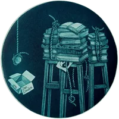
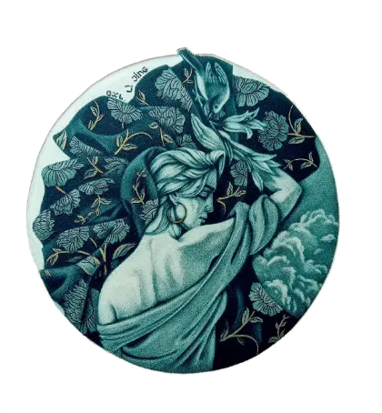
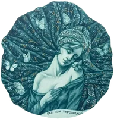

Fig. 04 Harvest time, 2025. Mezzotint on paper, ⌀ 50 cm
Monochrome symbolic still lifes exploring faith and sacrifice, abandonment and hope, and the relationship between the human and the divine.
Marina Maroz (b. 1984, Minsk) is a graphic artist and printmaker whose practice centres on etching, in particular mezzotint and soft ground etching. She lives and works in Minsk. About the artist →
ContentsSeriesYearsWorks
IEvidences
2021—202506



 IIHarvest
2020—202506
IIHarvest
2020—202506




 IIIEx libris
2021—202512
IIIEx libris
2021—202512











- 2025VI International Ex Libris CompetitionLargo Art Gallery, Varna, Bulgaria
- 2024Evidences, solo exhibitionTerra Graphica Sacrum, Palace of Art, Minsk
- 2023Autumn SalonPalace of Art, Minsk
- 2022The World of MezzotintNational Center for Contemporary Arts, Minsk